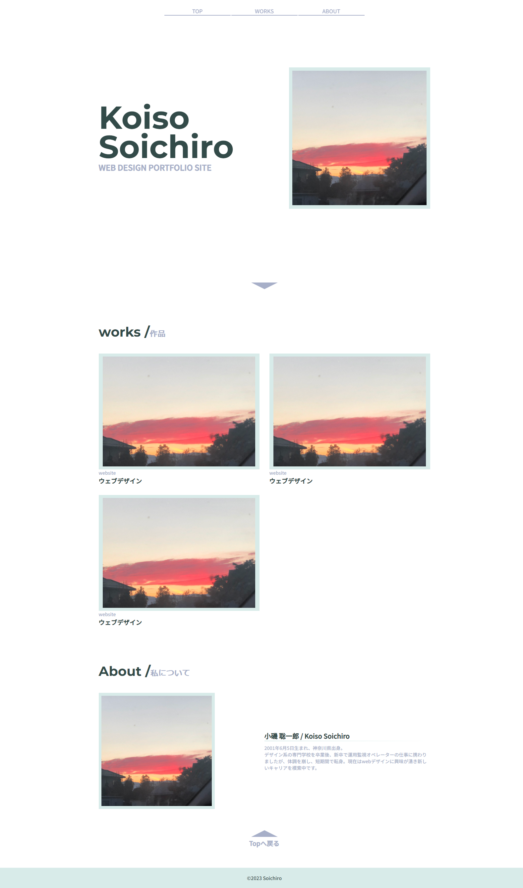

ポートフォリオサイト/webデザイン

制作期間：
一か月
使用した技術：
HTML/CSS/Javascript/Photoshop/Figma
書籍などから学んだ知識で初めて自身のポートフォリオサイトを制作しました。
最低限のwebサイトとして違和感のないと思える機能を実装し
サイトデザインは近い年代のwebデザイナーのポートフォリオサイトやシンプルなデザインを参考にし制作しました。
制作過程
初めにサイト内の情報を書き出しワイヤーフレームを作り実際の文字の大きさやサイト幅を
知るために大まかな区切りで要素をHTMLに書き検証しました。
cssの効果も知りたく一度適当なデザインでサイトを確かめづつコーディングしその後
Figmaを使いwebデザインを作りそれを実装しました。
